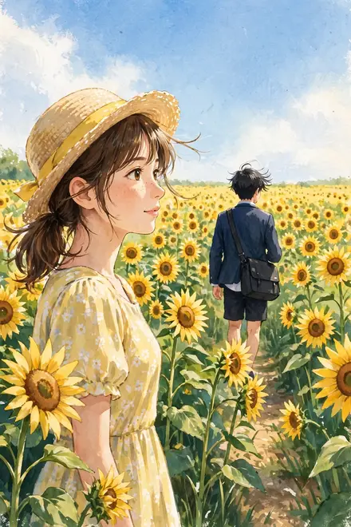

長編・前後編・完結
ヒマワリの夏、君の横顔
青春・タイムループ ・ 約7,850字 ・ 読了 約15分
ヒマワリの咲く夏の町。マサヤとミクの、どこか噛み合わない時間が流れていく。あの夏に隠された秘密とは――。
目次（全2章）
前編 繰り返す夏
蝉の声が、空気を震わせていた。田舎の夏は、毎年同じように暑くて、同じように眩しい。けれど――高校三年の夏は、どこか違う匂いがした。
バスケ部キャプテンのマサヤは、朝練を終えて校舎裏の水道で顔を洗った。冷たい水が頬を伝う。その向こうで、吹奏楽部の音が聞こえる。トランペットの高い音。クラリネットの柔らかい音。そして――その中心にいるのが、幼馴染のミクだった。
ミクは、ヒマワリみたいな笑顔を持つ女の子だ。誰にでも優しくて、クラスのアイドルで、でもマサヤの前では少しだけ表情が違う。それに気づいているのに、気づかないふりをしてきた。
今日もミクは、練習の合間に水筒を持って校舎裏へ歩いてきた。マサヤを見つけると、少しだけ歩く速度が速くなる。その仕草が、妙に胸に刺さる。
「マサヤ、朝練おつかれ。めっちゃ汗かいてるやん」
ミクは笑いながら、マサヤの額にタオルを当てた。その距離が近すぎて、心臓が跳ねる。
「べ、別にええって。自分で拭くし」
「いいから。キャプテンやのに、世話されるの下手すぎ」
ミクの指先が、マサヤのこめかみをそっとなぞる。その瞬間――マサヤは、自分の胸の奥で何かが“ほどける”のを感じた。
ミクの瞳は、笑っているのに、どこか不安そうだった。その不安の理由を、マサヤはまだ知らない。けれど、「この子は俺のこと……」と、初めて“確信に近い何か”が胸に灯った。
ミクはタオルを離しながら、少しだけ視線をそらした。
「……今日、帰り道いっしょに帰れへん？話したいことあるねん」
その声は、いつものミクより少しだけ震えていた。マサヤはその震えを、ちゃんと感じ取った。胸が熱くなる。夏の空気が、急に甘くなる。
「ええよ。帰ろ」
ミクはほっとしたように笑った。その笑顔が、ヒマワリより眩しかった。
――この瞬間が、マサヤの“時間”が狂い始める最初の一歩だった。
校舎の影から、ひとりの少年がこちらを見ていた。制服でもなく、見覚えのない顔。年齢もわからない。ただ、じっとマサヤを見つめている。
ミクは気づいていない。マサヤだけが、その視線を感じた。
少年は、口の動かし方だけで言った。
「また、ここからやり直しや」
声は聞こえない。けれど確かに、そう言った。
次の瞬間、風が止まった。蝉の声が消えた。世界が一瞬だけ“巻き戻ったような感覚”がした。
ミクが振り返る。
「マサヤ？どうしたん？」
マサヤは答えられなかった。ただ、胸の奥で何かがざわついていた。
――この夏は、普通じゃない。
そう直感した。
そしてその直感は、後に“死”と“未来”と“異世界”へつながる伏線になる。
放課後。ミクと並んで歩く帰り道は、いつもより静かだった。ミクは何か言いたそうで、でも言えないまま、ヒマワリ畑の前で立ち止まった。
「マサヤ……もし、世界が一回だけ巻き戻るとしたら、何したい？」
唐突すぎる質問に、マサヤは言葉を失った。
「なんでそんなこと聞くん」
ミクは笑わなかった。その瞳は、どこか怯えていた。
「……なんとなく。最近、変な夢見るねん。同じ夏を何回も繰り返してる夢。マサヤが、何回も何回も、私を――」
言いかけた瞬間。
世界が止まった。
風が止まり、蝉の声が消え、ミクの髪が空中で静止した。
マサヤだけが動けた。
ヒマワリ畑の奥に、“光の縁だけで形作られた扉”が現れた。
そして、あの謎の少年が立っていた。
「来いよ、マサヤ。ここから先は、君が選ばんと誰も救われへん」
少年の声は、時間の外側から響くようだった。
マサヤは振り返った。止まった世界の中で、ミクは涙を浮かべていた。
胸が痛む。怖い。でも――行かなあかん。
マサヤは扉へ足を踏み入れた。
光が弾け、世界が反転した。
目を開けると、そこは見たことのない街だった。空は紫と金色が混ざり、道には“死んだはずの人”と“まだ生まれていない子ども”が一緒に歩いていた。
異世界。時間が混ざり合う世界。
少年が隣に立つ。
「ここは“選択の街”。君が選ばなかった未来と、選んでしまった過去が全部ある場所や」
マサヤは歩きながら、信じられない光景を見る。
・小学生の頃に事故で亡くなった友達が笑っている・未来のミクが、誰かの墓の前で泣いている・自分の“死んだ姿”が、遠くの広場に横たわっている
胸が締め付けられる。
「なんで俺の未来が死んでんねん……」
少年は静かに言った。
「君は“誰かを救うために自分を犠牲にする”選択をし続ける。その結果がこれや」
マサヤは震えた。
「ミクを救ったら、誰かが死ぬ。友達を救ったら、家族が死ぬ。誰かを守るたびに、別の誰かが消える。君はそのループに閉じ込められてる」
マサヤは叫んだ。
「そんな世界、嫌や！」
少年は首を振る。
「でも君は、毎回そう選んでる。ミクを救うために、自分を捨てる未来ばっかりや」
マサヤは膝をついた。
「……ミクは、俺のこと好きなんか？」
少年は少し笑った。
「そんなこと、君はとっくに気づいてるやろ」
胸が熱くなる。痛いほどに。
マサヤは異世界で何度も夏を繰り返した。
・ミクが事故に遭う未来・友人が川で溺れる未来・父親が倒れる未来・自分が死ぬ未来
選択するたびに、世界が巻き戻る。
ミクの笑顔が消える未来だけは、どうしても耐えられなかった。
あるループで、ミクが泣きながら言った。
「マサヤ……なんで私を助けるために、自分を犠牲にするん……そんなの、嬉しくない……私、マサヤが生きててくれたらそれでいいのに……」
その言葉が、マサヤの胸を刺した。
ミクは震える声で続けた。
「私……ずっと好きやった。でも、マサヤはいつも誰かのために自分を捨てるから……怖かった。私のせいでマサヤが死ぬ未来なんて、絶対嫌や」
涙が落ちる。
その瞬間、マサヤは初めて“自分の選択が誰かを傷つけていた”ことを理解した。
少年が現れた。
「やっと気づいたな、マサヤ。君は“誰かを救うために自分を捨てる”ことしか知らんかった。でもそれは、誰も幸せにせえへん」
マサヤは拳を握った。
「俺は……ミクを救いたい。でも、自分も生きたい。家族も友達も、誰も失いたくない」
少年は微笑んだ。
「それが“本当の選択”や。君は今まで、一番大事な選択をしてへんかった」
世界が揺れた。ヒマワリの光が空へ舞い上がる。
少年は最後に言った。
「俺の正体、気づいてるやろ？」
マサヤはゆっくり頷いた。
「……未来の俺やろ」
少年は優しく笑った。
「そうや。君が何度も間違えて、何度も泣いて、それでもミクを守りたいって願い続けた“未来の君”。もう俺の役目は終わりや」
光の中へ消えていった。
現実世界に戻ると、ミクが泣きながらマサヤを抱きしめた。
「マサヤ……帰ってきてくれてよかった……」
マサヤはミクの肩を抱き返した。
「ミク。俺、もう自分を捨てる選択はせえへん。ちゃんと生きる。ミクと、家族と、友達と――全部守るために、生きる」
ミクは涙の中で笑った。
「……それが聞きたかった」
ヒマワリ畑の風が吹いた。夏の匂いが胸に満ちる。
マサヤはミクの手を握った。
「ミク。俺、ずっと好きやった」
ミクは顔を赤くして、でも嬉しそうに笑った。
「知ってたよ。でも、ちゃんと言ってくれてありがとう」
二人は並んで歩き出した。未来へ向かって。
異世界の扉はもうない。タイムループも終わった。
夏は続く。でももう、同じ夏は二度と来ない。
マサヤは初めて、“自分の人生を生きる”という選択をした。
その選択が、彼の未来を大きく変えていくことを、この時のマサヤはまだ知らない。
後編 父の死ぬはずだった未来の影
異世界から戻ってきた翌日。マサヤは、いつものように朝練へ向かった。蝉の声、湿った風、ヒマワリの匂い。全部が“現実”のはずなのに、どこか違和感があった。
ミクは校門で待っていた。昨日より少しだけ距離が近い。手をつなぐわけではないけど、つなごうと思えばすぐ届く距離。
「おはよ、マサヤ。今日もいっしょに帰ろな」
その言葉が胸に染みた。異世界で何度も失ったミクの笑顔が、今はちゃんと目の前にある。
マサヤは思わず言った。
「ミク、昨日のこと……ほんまにありがとう。俺、生きるって決めたから」
ミクは照れたように笑った。
「うん。マサヤが生きてくれるなら、それでいい」
その瞬間――風が止まった。
蝉の声が一瞬だけ途切れた。
マサヤの背筋がぞくりとした。
異世界の残響。タイムループの影。もう終わったはずのものが、ほんの一瞬だけ“顔を出した”。
ミクは気づいていない。マサヤだけが、その違和感を感じた。
「……今、なんか変な感じせんかった？」
ミクは首をかしげる。
「え？なんも。どうしたん？」
マサヤは笑ってごまかした。でも胸の奥がざわついていた。
昨日、異世界が消えた時、少年――未来の自分はこう言った。
「この先の未来は、誰も知らん」
その言葉が、今になって重く響く。
放課後。ミクと帰る道は、昨日よりも穏やかで、昨日よりも“普通の幸せ”があった。
ミクがふと立ち止まった。
「マサヤ、見て。ヒマワリ、昨日より咲いてる」
確かに、畑の奥のヒマワリが増えていた。昨日はなかった場所に、新しい花がいくつも咲いている。
ミクは嬉しそうに笑った。
「なんか、いい夏やなぁ」
マサヤは笑い返した。でも胸の奥で、別の感情が動いた。
――ヒマワリは、未来の象徴。
異世界が消えたはずなのに、“未来が増えている”ような感覚。
その時だった。
畑の奥に、一瞬だけ“人影”が見えた。
白いシャツ。黒い短髪。どこか見覚えのある背中。
マサヤは息を呑んだ。
ミクは気づいていない。
影はすぐに消えた。でも確かにそこにいた。
未来の自分ではない。少年でもない。
もっと別の誰か。
胸がざわつく。嫌な予感がする。
ミクがマサヤの袖を引いた。
「どうしたん？顔色悪い？」
マサヤは笑った。
「なんでもない。帰ろ」
でも――心の奥では確信していた。
“終わったはずの物語は、まだ終わっていない。”
夜。マサヤは眠れなかった。
窓の外で、風が揺れる。ヒマワリ畑の影が月に照らされる。
その時。
耳元で、聞こえるはずのない声がした。
「選択は終わってへんで、マサヤ」
マサヤは跳ね起きた。
部屋には誰もいない。でも声は確かに聞こえた。
未来の自分の声ではない。少年の声でもない。
もっと低くて、もっと冷たい声。
胸が凍る。
窓の外を見ると、ヒマワリ畑の奥に“黒い影”が立っていた。
その影は、マサヤを見ていた。
そして――ゆっくりと手を伸ばした。
指先が、まるで“時間そのもの”を掴むように揺れていた。
マサヤは悟った。
これは、異世界の残り物やない。新しい未来の“侵入者”や。
異世界が消えたことで、閉じられていたはずの“別の未来”が開いた。
その未来から、何かが来ている。
ミクを守るために選んだ未来は、まだ安全ではなかった。
翌朝。マサヤは寝不足のまま学校へ向かった。ミクはいつも通り笑っていたけど、その笑顔の奥に、昨日の“影”がちらついて落ち着かない。
「マサヤ、今日の放課後さ……ちょっと話したいことあるねん」
ミクは言いながら、ほんの一瞬だけ視線をそらした。
その仕草が、前作の“ループの夏”を思い出させる。胸がざわつく。
「ええよ。どこで話す？」
「ヒマワリ畑。あそこがいい」
マサヤは頷いた。でも心の奥では、“あそこに影がいた”という事実が重く響いていた。
放課後。ヒマワリ畑は、昨日よりさらに花が増えていた。まるで未来が膨張しているみたいに。
ミクはゆっくり口を開いた。
「マサヤ……最近、変なこと起きてへん？」
マサヤは息を呑んだ。
「なんでそう思うん」
ミクはヒマワリを見つめたまま言った。
「昨日の夜、誰かに呼ばれた気がした。名前は聞こえへんかったけど……“選べ”って言われた気がした」
マサヤの心臓が跳ねた。
ミクも“影”を感じていた。
その時だった。
ヒマワリ畑の奥から、ゆっくりと人影が歩いてきた。
昨日見た影とは違う。もっとはっきりしている。輪郭がある。顔がある。
マサヤは息を止めた。
ミクが震えた声で言った。
「……誰？」
影は近づいてきて、ヒマワリの間で立ち止まった。
その顔を見た瞬間、マサヤは膝が崩れそうになった。
影の正体は――“マサヤの父親の若い頃の姿”だった。
父親は、今は普通に家にいる。生きている。病気でもない。
なのに、目の前にいるのは“若い頃の父”だった。
父は静かに言った。
「マサヤ……お前はまだ知らん。この家には“選ばれなかった未来”がある」
ミクは震えてマサヤの腕を掴んだ。
「なんで……なんでマサヤのお父さんがここに……？」
父はミクを見て、優しく微笑んだ。
「ミクちゃん。君も巻き込まれてしもうたんやな」
マサヤは叫んだ。
「巻き込まれたってなんや！異世界は終わったんちゃうんか！」
父は首を振った。
「終わったのは“あの異世界”や。でもな、マサヤ……お前が選んだ未来は、別の未来を呼び寄せてしもうた」
マサヤは理解できなかった。
父は続けた。
「お前が“生きる”と選んだ瞬間、死ぬはずやった未来が消えた。その代わりに――“生き残ったはずの誰かの未来”が歪んだんや」
ミクが息を呑んだ。
「それって……誰の未来が？」
父はゆっくり言った。
「俺や」
マサヤは凍りついた。
父は続けた。
「本来の未来では、俺は今年の夏に死ぬはずやった。でもお前が未来を変えたことで、俺は生き残った。その結果――“死ぬはずだった俺の未来”が、影になって現れたんや」
マサヤは震えた。
「じゃあ……昨日の黒い影は……」
父は静かに頷いた。
「“死ぬはずだった俺”や」
ミクが息を呑んだ。
「そんな……そんなことあるん……？」
父はヒマワリ畑を見つめた。
「未来を変えるってことは、誰かの未来を奪うってことや。お前はミクを救った。自分も救った。家族も友達も救った。その代わりに――“俺の死ぬ未来”が行き場を失った」
マサヤは叫んだ。
「そんな未来いらん！父さんが死ぬ未来なんて、絶対いらん！」
父は悲しそうに笑った。
「せやけどな、マサヤ……未来には“帳尻”があるんや。死ぬはずの未来が消えたら、その未来は“影”になって彷徨う」
ミクが震える声で言った。
「じゃあ……その影は何するん……？」
父は答えた。
「“元の未来に戻ろうとする”」
マサヤは理解した。
影は――父を殺しに来る。
父はマサヤの肩に手を置いた。
「マサヤ。お前はまた選ばなあかん。俺を救うか、未来を戻すか。どっちかしかない」
ミクは涙を浮かべた。
「そんな選択……マサヤにさせたらあかん……！」
父は静かに言った。
「ミクちゃん。選択はいつも、誰かの痛みの上に成り立つんや」
マサヤは拳を握った。
「俺は……絶対に父さんを死なせへん。ミクも、家族も、友達も、誰も失わへん。そんな未来、俺が作る」
父は目を見開いた。
「それは……“誰も選ばない未来”やぞ」
マサヤは言った。
「せやから俺が選ぶんや」
ミクは涙を拭いて、マサヤの手を握った。
「マサヤが選ぶ未来なら、私も信じる」
その瞬間――ヒマワリ畑の奥から、黒い影がゆっくりと歩いてきた。
父の“死ぬはずだった未来”。
影は、父の方へ手を伸ばした。
マサヤは叫んだ。
「来るな！！」
影は止まらない。
未来は、まだ終わっていない。
黒い影は、ゆっくりと父へ手を伸ばした。その指先は、まるで“時間そのもの”を掴むように揺れている。
ミクが叫んだ。
「来たらあかん！！」
でも影は止まらない。影は“未来の帳尻”を合わせようとしている。父が死ぬはずだった未来へ戻ろうとしている。
マサヤは父の前に立った。
「父さんは死なせへん。俺が守る」
影はマサヤを見た。その目は存在しないはずなのに、確かに“見ている”と感じた。
影は低い声で言った。
「戻れ。未来は一つでええ」
マサヤは震えた。影は“未来の修正”を求めている。父が死ぬ未来を取り戻そうとしている。
父は静かに言った。
「マサヤ……俺はもうええんや。お前が生きてくれたら、それでええ」
ミクが叫んだ。
「そんなこと言わんといて！！マサヤがどれだけ苦しんできたか、知らんの！？誰も失いたくないって、やっと言えたのに……！」
父はミクを見て、優しく微笑んだ。
「ミクちゃん……ありがとうな」
影がさらに近づく。
マサヤは拳を握った。
「影……お前は父さんの“死ぬはずだった未来”やろ。でもな――未来は一つやない。俺が選んだ未来は、父さんが生きる未来や」
影は首をかしげた。
「選択は痛みを生む。誰かが生きれば、誰かが死ぬ」
マサヤは叫んだ。
「そんな未来、俺が壊す！！」
影が一瞬だけ揺れた。まるで“理解できない選択”を前に戸惑っているように。
ミクがマサヤの手を握った。
「マサヤ……いっしょに選ぼ。未来は一人で背負うもんちゃう」
その瞬間――影がミクを見た。
影はゆっくりと手を伸ばし、ミクの胸元へ触れようとした。
マサヤは叫んだ。
「ミクに触るな！！」
影は止まらない。
ミクは震えながら言った。
「マサヤ……もし私が“帳尻”になるなら……私、怖くないよ。マサヤが生きてくれるなら、それで――」
マサヤはミクを抱き寄せた。
「そんな未来、絶対に選ばん！！」
影がミクに触れた瞬間――世界が白く弾けた。
光が収まると、マサヤは“異世界の街”に立っていた。
前作で消えたはずの世界。過去と未来が混ざり合う街。
ミクも父もいない。影もいない。
ただ一人、あの少年――未来のマサヤが立っていた。
少年は静かに言った。
「戻ってきたな、マサヤ」
マサヤは叫んだ。
「なんでや！！異世界は消えたんちゃうんか！！なんでまたここに来てるんや！！」
少年は首を振った。
「消えたのは“君が迷ってた時の異世界”や。今のこれは、“君が未来を壊そうとした時に現れる異世界”や」
マサヤは息を呑んだ。
「俺は未来を壊してへん！誰も失いたくないだけや！」
少年は静かに言った。
「それが“未来を壊す選択”なんや」
マサヤは理解できなかった。
少年は続けた。
「未来は一本の線やない。無数の線が絡み合ってできてる。君が誰も失わない未来を選ぶと、他の未来が全部“行き場を失う”」
マサヤは震えた。
「じゃあ……影は……」
「影は“行き場を失った未来の亡霊”や」
マサヤは膝をついた。
「俺は……どうしたらええんや……誰も失いたくない……ミクも、父さんも、友達も……誰も……」
少年は近づいて、マサヤの肩に手を置いた。
「マサヤ。君はまだ“本当の選択”をしてへん」
マサヤは顔を上げた。
「本当の選択ってなんや……」
少年は言った。
「誰かを救うんやなくて、“誰と未来を生きたいか”を選ぶことや」
マサヤは息を呑んだ。
「救うんやなくて……生きたい人を選ぶ……？」
少年は頷いた。
「未来は救うもんやない。未来は“いっしょに生きたい人”と作るもんや」
その瞬間、マサヤの胸に“ある答え”が浮かんだ。
少年は言った。
「さあ、マサヤ。誰と未来を生きたい？」
マサヤは迷わなかった。
「ミクや」
少年は微笑んだ。
「それが“本当の選択”や」
世界が揺れた。光が溢れた。
少年は最後に言った。
「ミクを選んだ未来は、君が守る未来や。影はもう、君には触れられへん」
光が弾けた。
目を開けると、マサヤはヒマワリ畑に立っていた。
ミクが泣きながら抱きついてきた。
「マサヤ！！急に倒れたから、めっちゃ怖かった……！」
父も駆け寄ってきた。
「大丈夫か、マサヤ！」
マサヤは二人を抱きしめた。
「俺はもう迷わへん。ミクと未来を生きる。父さんも、家族も、友達も守る。でも――俺が選ぶ未来は、ミクといっしょの未来や」
ミクは涙の中で笑った。
「……ありがとう。私も、マサヤと未来を生きたい」
ヒマワリ畑の風が吹いた。影はもうどこにもいない。
未来は一本の線じゃない。無数の線の中から、マサヤは“ミクと生きる未来”を選んだ。
その選択が、新しい夏を始めた。
― 完 ―
読んでくださって、ありがとうございます。
一言でも構いません、感想をいただけると励みになります。